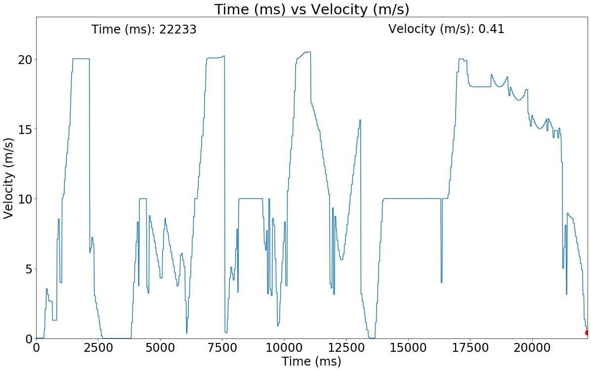
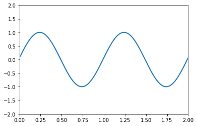
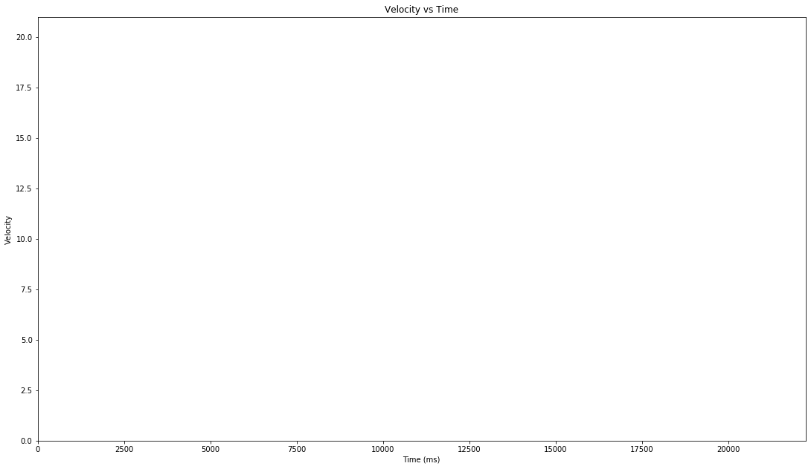
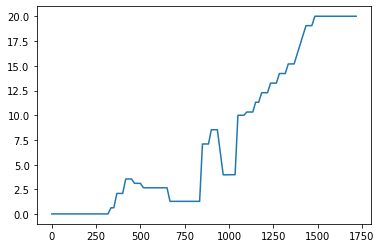
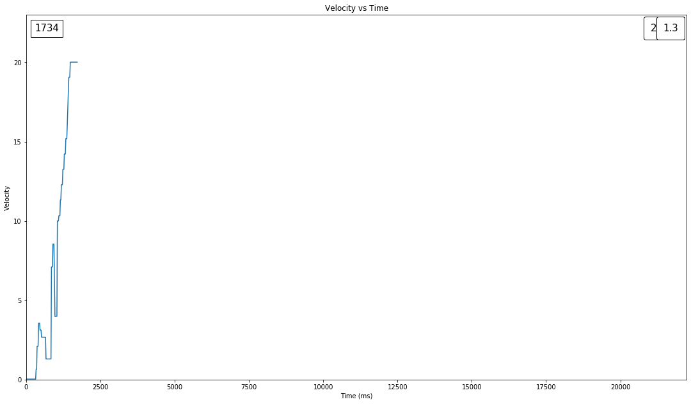
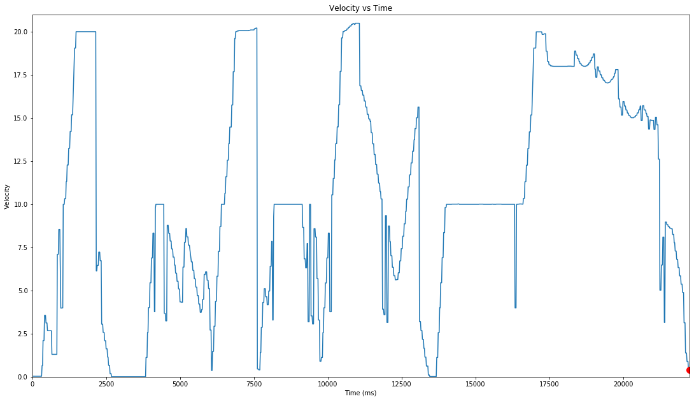

!ffmpeg -i line_tracking_animated.mp4 line_tracking_animated.gifTable of Contents
- 1 Using Matplotlib to Animate Data From a Velocity Recording
- 2 Introduction
- 3 Demonstration
- 4 Importing Libraries + Loading Data
-
5 Plotting Function
- 5.1 Explanation of Inputs
-
5.2 Explanation of Variables
- 5.2.1 Setting Up Data Section
- 5.2.2 Graph Type Settings Section
- 5.2.3 Animation Settings
- 5.2.4 Setting Up The Figure
- 5.2.5 Setting Up Positions of X and Y Outputs For Value
- 5.2.6 Setting Up The Line Plot
- 5.2.7 Initialization Function: Plot The Background of Each Frame
- 5.2.8 Animation Function. This Is Called Sequentially
- 5.2.9 Save The Animation as an mp4.
- 6 Working Through Matplotlib Animation Tutorial
- 7 Messing with a overlapping graph
Introduction
One of my friends approached me asking if I had any experience animating graphs, since I had experience with video editing. Though I had not had any formal experience, I decided that it would be a interesting challenge to embark.
I did some research and found a tutorial as seen in the section “Working Through Matplotlib Animation Tutorial”
Demonstration
Tracking a Line Through Time

Plotting a Dot and Tracking Across Velocity Curve

Generating The Gifs
To generate these gifs, I used ffmpeg to convert the mp4s to gifs.
To convert the mp4s to gifs, I opened my directory in the terminal and ran the following ffmpeg command, after converting the video to gif, I added and pushed the files to github. Since github does not show local embeds, I embedded the url of the gif from the github repository.
ffmpeg -i line_tracking_animated.mp4 line_tracking_animated.gifAlternatively, if you have ffmpeg installed, you can run the following cell to run it in a jupyter cell
Breakdown of the command * ffmpeg tells the terminal to use ffmpeg * -i tells ffmpeg the input * line_tracking_animated.mp4 tells ffmpeg the source file * line_tracking_animated.gif tells ffmpeg the output file title and format
!ffmpeg -i dot_tracking_animated.mp4 dot_tracking_animated.gifImporting Libraries + Loading Data
from IPython.core.display import display, HTML
display(HTML("<style>.container { width:100% !important; }</style>"))import pandas as pd
import numpy as np
from matplotlib import pyplot as plt
from matplotlib import animation
from matplotlib.offsetbox import AnchoredTextdf = pd.read_csv("velocity.csv")
df| Time (ms) | Velocity (m/s) | |
|---|---|---|
| 0 | 0 | 0.03 |
| 1 | 17 | 0.03 |
| 2 | 34 | 0.03 |
| 3 | 50 | 0.03 |
| 4 | 67 | 0.03 |
| ... | ... | ... |
| 1314 | 22167 | 0.89 |
| 1315 | 22183 | 0.89 |
| 1316 | 22200 | 0.41 |
| 1317 | 22217 | 0.41 |
| 1318 | 22233 | 0.41 |
1319 rows × 2 columns
print("max time")
display(df["Time (ms)"].max())
print("min time")
display(df["Time (ms)"].min())
print("Velocity")
display(df["Velocity (m/s)"][1])
print("Max Velocity")
display(df["Velocity (m/s)"].max())
print("Final time")
display(df["Time (ms)"].iloc[-1]*60/1000)
print("Final time rounded")
display(int(round(df["Time (ms)"].iloc[-1]*60/1000, 1)))
print("column titles")
column_titles = list(df.columns.values)
display(column_titles)max time22233min time0Velocity0.03Max Velocity20.5Final time1333.98Final time rounded1334column titles['Time (ms)', 'Velocity (m/s)']Plotting Function
I wrote the animateGraph after modifying Matplotlib Animation Tutorial to work for my velocity data from the Having Line Plotted Through Time section and later Having a Dot Tracking Along the Velocity Curve.
The function takes the general structure of the respective and makes it into a single function
Explanation of Inputs
dfinputDataFramex_columncolumn title for x axisy_columncolumn title for y axisdot_tracktakesyesorno, if it is notyes, it will default to the line graphframerateinteger that specifies the video’s framerate
Explanation of Variables
Setting Up Data Section
x_dfDataFrameof just the x values, I seperated the x and yDataFramesto make it easier to follow in the animation functiony_dfDataFrameof just the x values, I seperated the x and yDataFramesto make it easier to follow in the animation functionx_maxmaximum of the x values, used to set the bounds of x axisy_maxmaximum of the y values, used to set the bounds of y axis, added2to make space for the time and velocity printoutslast_indexused to preventKeyerror, seeFiguring out Keyerrorsection for a more in depth explanation
Graph Type Settings Section
plot_dotboolean used to decide which animation to use, ifTruewill have animation output the dot tracker on graphgraph_typestring used to keep track of the animation, used for filename- can be either
dot_trackingorline_tracking
- can be either
Animation Settings
time_secondstakes last entry of x value to get the duration of the data converts from miliseconds to seconds, used later fortotalFramesanimation duration calculationtotalFramesproduct offramerateandtime_secondsto get the number of frames for matplotlib to animate
Setting Up The Figure
figfigure variable, stores figure object- the size was set to
(20,12) - I followed the suggestions to change the size and output a sample file from Stack Overflow How to Change Figure Size
- I followed the suggestions to change the font size from Stack Overflow How to Change Font Size
- the size was set to
Setting Up Positions of X and Y Outputs For Value
- I followed the example set by the matplotlib wiki from Text properties and layout
y_value_printtext object, will set the y value, for the demo, we use velocity set forrightandtopis updated frame by frame in theanimate(i)functionx_value_printtext object, will set the x value, for the demo, we use time set forleftandtopis updated frame by frame in theanimate(i)function
Setting Up The Line Plot
- I used the
plot_dotto determine which graph should be plotted- if
plot_dotisTrue, we will plot the existing graph and have the dot - if
plot_dotisFalse, we will plot the graph sections frame by frame
- if
- To get the red dot, I read the instructions of the different passable arguments from the matplotlib wiki from matplotlib.pyplot.plot
Initialization Function: Plot The Background of Each Frame
- I kept the example set from the guide see
Working Through Matplotlib Animation Tutorialfor more details
Animation Function. This Is Called Sequentially
- This section is broken up into two parts,
- Checking if the function reaches the last value of the
DataFrame - updating the x and y column print outs
- Checking if the function reaches the last value of the
- To check if the function has reached the last value of the
DataFrame, we have aifconditional that checks if theanimatefunction has reached the end of theDataFrame, if it does, then it will use the value atlast_index, we want it to keep the last value to avoid theKeyerroras explained in the later experimental section - Next, the function will set the
x_valueandy_valueto be the final index valuex_valueandy_valueis used for animating the labels for the values of x and y
- Afterwards the function follow a second
ifstatement, which will check ifplot_dotis true or false- if
plot_dotisFalse, the function will output everything up until the currentiindex value.- This is used for the animation that plots graph sections frame by frame
- if
plot_dotisTrue, the function will output the currentiindex value.- This is used for the animation that plots the point frame by frame
- if
- The next section will update the x and y column print out values for each frame I took inspiration from Matplotlib animations the easy way specifically the
"Changing labels and text"sectionvalues_xis a string variable that stores the x column title, adds colons, and the x valuevalues_yis a string variable that stores the y column title, adds colons, and the y value- After setting
values_xandvalues_ywe use.set_text()to update they_value_printandx_value_printeach time
- Once all the variables have been updated,
animate(i)will return thelineto theanimation.FuncAnimation(), which will continue until it reaches the last frame
Save The Animation as an mp4.
- I did not make significant changes to the original, I only changed the filename to match the graph type.
- I wanted the filename to be the ’
x_columnvsy_columngraph_type_animated.mp4’ - The ideal file name would be ’Velocity_(m/s)_vs_Time (ms)_line_tracking_animated.mp4
- When I tried parsing the
x_columnas a string, python had serious issues with the slash (/) part of (m/s), enough so that it would prevent the file from being saved - An potential alternative solution would to change m/s to ms^-1, but it require changing the data or engineering a solution that read the units and replaced slashes with unit^-1. After evaluating the alternatives, I realized it would be easier to rename the file. If this function were used to generate hundreds of graphs from hundreds of source files, I would need to find a better solution. Since the purpose of this function is to make it easier to change between the dot and line tracking, I did not invest any further time into developing an alternative solution
- When I tried parsing the
- I wanted the filename to be the ’
def animateGraph(df,x_column, y_column, dot_track, framerate):
# Setting up data
x_df = df[x_column]
y_df = df[y_column]
x_max = int(np.ceil(df[x_column].max()))
y_max = int(np.ceil(df[y_column].max())) + 2
last_index = len(df)-1
# Check if we are plotting the graph or a graph + dot
if(dot_track.lower() == "yes"):
plot_dot = True
graph_type = "dot_tracking"
else:
plot_dot = False
graph_type = "line_tracking"
# Animation settings
time_seconds = x_df.iloc[-1]/1000
totalFrames = int(round(framerate * time_seconds))
# Setting up the figure
fig = plt.figure()
fig.set_size_inches(20, 12)
fig.savefig('test2png.png', dpi=100)
plt.rcParams.update({'font.size': 24})
# Setting up the axes
ax = plt.axes(xlim=(0, x_max), ylim=(0, y_max))
ax.set(title= x_column + ' vs ' + y_column,
ylabel= y_column,
xlabel= x_column,
)
# Setting up the positions of velocity and time outputs
left, width = .1, .75
bottom, height = .25, .73
right = left + width
top = bottom + height
y_value_print = ax.text(right, top, "y value",
horizontalalignment='right',
verticalalignment='top',
transform=ax.transAxes)
x_value_print = ax.text(left, top, "x value",
horizontalalignment='left',
verticalalignment='top',
transform=ax.transAxes)
# Setting up the line plot
if(plot_dot == True):
plt.plot(x_df, y_df)
line, = plt.plot([], [], linestyle='none', marker = 'o', ms = 10, color='r')
else:
line, = plt.plot(x_df, y_df)
# initialization function: plot the background of each frame
def init():
line.set_data([], [])
return line,
# animation function. This is called sequentially
def animate(i):
if(i > last_index):
x_value = x_df[last_index]
y_value = y_df[last_index]
if(plot_dot == False):
x = x_df[0:last_index]
y = y_df[0:last_index]
else:
x = x_df[last_index]
y = y_df[last_index]
else:
x_value = x_df[i]
y_value = y_df[i]
if(plot_dot == False):
x = x_df[0:i]
y = y_df[0:i]
else:
x = x_df[i]
y = y_df[i]
line.set_data(x, y)
# Update the figure with x and y values
values_x = x_column + ": " + str(x_value)
values_y = y_column + ": " + str(y_value)
y_value_print.set_text(values_y)
x_value_print.set_text(values_x)
return line,
# call the animator. blit=True means only re-draw the parts that have changed.
anim = animation.FuncAnimation(fig, animate, init_func=init,frames = totalFrames, interval=0, blit=False)
# save the animation as an mp4. This requires ffmpeg or mencoder to be
# installed. The extra_args ensure that the x264 codec is used, so that
# the video can be embedded in html5. You may need to adjust this for
# your system: for more information, see
# http://matplotlib.sourceforge.net/api/animation_api.html
anim.save(graph_type + '_animated.mp4', fps=framerate, extra_args=['-vcodec', 'libx264'])
plt.show()animateGraph(df,"Time (ms)", "Velocity (m/s)", "yes", 60)
animateGraph(df,"Time (ms)", "Velocity (m/s)", "no", 60)Working Through Matplotlib Animation Tutorial
I used Jake Vanderplas’s sine wave example posted below as a base to understand how matplotlib animates. I modified it to make it work with the velocity and time data I was given from my friend.
"""
Matplotlib Animation Example
author: Jake Vanderplas
email: vanderplas@astro.washington.edu
website: http://jakevdp.github.com
license: BSD
Please feel free to use and modify this, but keep the above information. Thanks!
"""
import numpy as np
from matplotlib import pyplot as plt
from matplotlib import animation
# First set up the figure, the axis, and the plot element we want to animate
fig = plt.figure()
ax = plt.axes(xlim=(0, 2), ylim=(-2, 2))
line, = ax.plot([], [], lw=2)
# initialization function: plot the background of each frame
def init():
line.set_data([], [])
return line,
# animation function. This is called sequentially
def animate(i):
x = np.linspace(0, 2, 1000)
y = np.sin(2 * np.pi * (x - 0.01 * i))
line.set_data(x, y)
return line,
# call the animator. blit=True means only re-draw the parts that have changed.
anim = animation.FuncAnimation(fig, animate, init_func=init,
frames=200, interval=20, blit=True)
# save the animation as an mp4. This requires ffmpeg or mencoder to be
# installed. The extra_args ensure that the x264 codec is used, so that
# the video can be embedded in html5. You may need to adjust this for
# your system: for more information, see
# http://matplotlib.sourceforge.net/api/animation_api.html
anim.save('basic_animation.mp4', fps=30, extra_args=['-vcodec', 'libx264'])
plt.show()
Having Line Plotted Through Time
From the base I added my own modifications titled Tracking a Line Through time, which included * setting variables for velocity (y_df) and time (x_df) dataframes * setting maximums for x and y * setting a time_seconds variable that converts the time in milliseconds to seconds * setting a framerate variable that sets the framerate of the graph * setting a totalFrames variable that sets the duration of the animation * increasing the figure size from 64x64 to a bigger 18.5x10.4 inch higher resolution figure with fig.set_size_inches() * increasing the framerate to 60 frames a second (setting framerate to 60), which makes the plot smoother * only downside is that it will take extra time to encode the final mp4 * modifying the limits. * adding titles for the figure * having the the animation plot the figure as time passes, rather needing a known function to plot it
x_df = df["Time (ms)"]
y_df = df["Velocity"]
x_max = int(np.ceil(df["Time (ms)"].max()))
y_max = int(np.ceil(df["Velocity"].max()))
time_seconds = x_df.iloc[-1]/1000
framerate = 60
totalFrames = int(round(framerate * time_seconds))
# First set up the figure, the axis, and the plot element we want to animate
fig = plt.figure()
fig.set_size_inches(18.5, 10.5)
fig.savefig('test2png.png', dpi=100)
# transparency settings for the figure
#fig.patch.set_alpha(0.)
ax = plt.axes(xlim=(0, x_max), ylim=(0, y_max))
ax.set(title='Velocity vs Time',
ylabel="Velocity",
xlabel="Time (ms)")
line, = plt.plot(x_df, y_df)
# initialization function: plot the background of each frame
def init():
line.set_data([], [])
return line,
# animation function. This is called sequentially
def animate(i):
x = x_df[0:i]
print("i", i)
y = y_df[0:i]
line.set_data(x, y)
return line,
# call the animator. blit=True means only re-draw the parts that have changed.
anim = animation.FuncAnimation(fig, animate, init_func=init,frames = totalFrames, interval=0, blit=False)
# save the animation as an mp4. This requires ffmpeg or mencoder to be
# installed. The extra_args ensure that the x264 codec is used, so that
# the video can be embedded in html5. You may need to adjust this for
# your system: for more information, see
# http://matplotlib.sourceforge.net/api/animation_api.html
anim.save('basic_animation.mp4', fps=framerate, extra_args=['-vcodec', 'libx264'])
plt.show()i 0
i 1
i 2
i 3
i 4
i 5
i 6
i 7
i 8
i 9
i 10
i 11
i 12
i 13
i 14
i 15
i 16
i 17
i 18
i 19
i 20
i 21
i 22
i 23
i 24
i 25
i 26
i 27
i 28
i 29
i 30
i 31
i 32
i 33
i 34
i 35
i 36
i 37
i 38
i 39
i 40
i 41
i 42
i 43
i 44
i 45
i 46
i 47
i 48
i 49
i 50
i 51
i 52
i 53
i 54
i 55
i 56
i 57
i 58
i 59
i 60
i 61
i 62
i 63
i 64
i 65
i 66
i 67
i 68
i 69
i 70
i 71
i 72
i 73
i 74
i 75
i 76
i 77
i 78
i 79
i 80
i 81
i 82
i 83
i 84
i 85
i 86
i 87
i 88
i 89
i 90
i 91
i 92
i 93
i 94
i 95
i 96
i 97
i 98
i 99
i 100
i 101
i 102
i 103
i 104
i 105
i 106
i 107
i 108
i 109
i 110
i 111
i 112
i 113
i 114
i 115
i 116
i 117
i 118
i 119
i 120
i 121
i 122
i 123
i 124
i 125
i 126
i 127
i 128
i 129
i 130
i 131
i 132
i 133
i 134
i 135
i 136
i 137
i 138
i 139
i 140
i 141
i 142
i 143
i 144
i 145
i 146
i 147
i 148
i 149
i 150
i 151
i 152
i 153
i 154
i 155
i 156
i 157
i 158
i 159
i 160
i 161
i 162
i 163
i 164
i 165
i 166
i 167
i 168
i 169
i 170
i 171
i 172
i 173
i 174
i 175
i 176
i 177
i 178
i 179
i 180
i 181
i 182
i 183
i 184
i 185
i 186
i 187
i 188
i 189
i 190
i 191
i 192
i 193
i 194
i 195
i 196
i 197
i 198
i 199
i 200
i 201
i 202
i 203
i 204
i 205
i 206
i 207
i 208
i 209
i 210
i 211
i 212
i 213
i 214
i 215
i 216
i 217
i 218
i 219
i 220
i 221
i 222
i 223
i 224
i 225
i 226
i 227
i 228
i 229
i 230
i 231
i 232
i 233
i 234
i 235
i 236
i 237
i 238
i 239
i 240
i 241
i 242
i 243
i 244
i 245
i 246
i 247
i 248
i 249
i 250
i 251
i 252
i 253
i 254
i 255
i 256
i 257
i 258
i 259
i 260
i 261
i 262
i 263
i 264
i 265
i 266
i 267
i 268
i 269
i 270
i 271
i 272
i 273
i 274
i 275
i 276
i 277
i 278
i 279
i 280
i 281
i 282
i 283
i 284
i 285
i 286
i 287
i 288
i 289
i 290
i 291
i 292
i 293
i 294
i 295
i 296
i 297
i 298
i 299
i 300
i 301
i 302
i 303
i 304
i 305
i 306
i 307
i 308
i 309
i 310
i 311
i 312
i 313
i 314
i 315
i 316
i 317
i 318
i 319
i 320
i 321
i 322
i 323
i 324
i 325
i 326
i 327
i 328
i 329
i 330
i 331
i 332
i 333
i 334
i 335
i 336
i 337
i 338
i 339
i 340
i 341
i 342
i 343
i 344
i 345
i 346
i 347
i 348
i 349
i 350
i 351
i 352
i 353
i 354
i 355
i 356
i 357
i 358
i 359
i 360
i 361
i 362
i 363
i 364
i 365
i 366
i 367
i 368
i 369
i 370
i 371
i 372
i 373
i 374
i 375
i 376
i 377
i 378
i 379
i 380
i 381
i 382
i 383
i 384
i 385
i 386
i 387
i 388
i 389
i 390
i 391
i 392
i 393
i 394
i 395
i 396
i 397
i 398
i 399
i 400
i 401
i 402
i 403
i 404
i 405
i 406
i 407
i 408
i 409
i 410
i 411
i 412
i 413
i 414
i 415
i 416
i 417
i 418
i 419
i 420
i 421
i 422
i 423
i 424
i 425
i 426
i 427
i 428
i 429
i 430
i 431
i 432
i 433
i 434
i 435
i 436
i 437
i 438
i 439
i 440
i 441
i 442
i 443
i 444
i 445
i 446
i 447
i 448
i 449
i 450
i 451
i 452
i 453
i 454
i 455
i 456
i 457
i 458
i 459
i 460
i 461
i 462
i 463
i 464
i 465
i 466
i 467
i 468
i 469
i 470
i 471
i 472
i 473
i 474
i 475
i 476
i 477
i 478
i 479
i 480
i 481
i 482
i 483
i 484
i 485
i 486
i 487
i 488
i 489
i 490
i 491
i 492
i 493
i 494
i 495
i 496
i 497
i 498
i 499
i 500
i 501
i 502
i 503
i 504
i 505
i 506
i 507
i 508
i 509
i 510
i 511
i 512
i 513
i 514
i 515
i 516
i 517
i 518
i 519
i 520
i 521
i 522
i 523
i 524
i 525
i 526
i 527
i 528
i 529
i 530
i 531
i 532
i 533
i 534
i 535
i 536
i 537
i 538
i 539
i 540
i 541
i 542
i 543
i 544
i 545
i 546
i 547
i 548
i 549
i 550
i 551
i 552
i 553
i 554
i 555
i 556
i 557
i 558
i 559
i 560
i 561
i 562
i 563
i 564
i 565
i 566
i 567
i 568
i 569
i 570
i 571
i 572
i 573
i 574
i 575
i 576
i 577
i 578
i 579
i 580
i 581
i 582
i 583
i 584
i 585
i 586
i 587
i 588
i 589
i 590
i 591
i 592
i 593
i 594
i 595
i 596
i 597
i 598
i 599
i 600
i 601
i 602
i 603
i 604
i 605
i 606
i 607
i 608
i 609
i 610
i 611
i 612
i 613
i 614
i 615
i 616
i 617
i 618
i 619
i 620
i 621
i 622
i 623
i 624
i 625
i 626
i 627
i 628
i 629
i 630
i 631
i 632
i 633
i 634
i 635
i 636
i 637
i 638
i 639
i 640
i 641
i 642
i 643
i 644
i 645
i 646
i 647
i 648
i 649
i 650
i 651
i 652
i 653
i 654
i 655
i 656
i 657
i 658
i 659
i 660
i 661
i 662
i 663
i 664
i 665
i 666
i 667
i 668
i 669
i 670
i 671
i 672
i 673
i 674
i 675
i 676
i 677
i 678
i 679
i 680
i 681
i 682
i 683
i 684
i 685
i 686
i 687
i 688
i 689
i 690
i 691
i 692
i 693
i 694
i 695
i 696
i 697
i 698
i 699
i 700
i 701
i 702
i 703
i 704
i 705
i 706
i 707
i 708
i 709
i 710
i 711
i 712
i 713
i 714
i 715
i 716
i 717
i 718
i 719
i 720
i 721
i 722
i 723
i 724
i 725
i 726
i 727
i 728
i 729
i 730
i 731
i 732
i 733
i 734
i 735
i 736
i 737
i 738
i 739
i 740
i 741
i 742
i 743
i 744
i 745
i 746
i 747
i 748
i 749
i 750
i 751
i 752
i 753
i 754
i 755
i 756
i 757
i 758
i 759
i 760
i 761
i 762
i 763
i 764
i 765
i 766
i 767
i 768
i 769
i 770
i 771
i 772
i 773
i 774
i 775
i 776
i 777
i 778
i 779
i 780
i 781
i 782
i 783
i 784
i 785
i 786
i 787
i 788
i 789
i 790
i 791
i 792
i 793
i 794
i 795
i 796
i 797
i 798
i 799
i 800
i 801
i 802
i 803
i 804
i 805
i 806
i 807
i 808
i 809
i 810
i 811
i 812
i 813
i 814
i 815
i 816
i 817
i 818
i 819
i 820
i 821
i 822
i 823
i 824
i 825
i 826
i 827
i 828
i 829
i 830
i 831
i 832
i 833
i 834
i 835
i 836
i 837
i 838
i 839
i 840
i 841
i 842
i 843
i 844
i 845
i 846
i 847
i 848
i 849
i 850
i 851
i 852
i 853
i 854
i 855
i 856
i 857
i 858
i 859
i 860
i 861
i 862
i 863
i 864
i 865
i 866
i 867
i 868
i 869
i 870
i 871
i 872
i 873
i 874
i 875
i 876
i 877
i 878
i 879
i 880
i 881
i 882
i 883
i 884
i 885
i 886
i 887
i 888
i 889
i 890
i 891
i 892
i 893
i 894
i 895
i 896
i 897
i 898
i 899
i 900
i 901
i 902
i 903
i 904
i 905
i 906
i 907
i 908
i 909
i 910
i 911
i 912
i 913
i 914
i 915
i 916
i 917
i 918
i 919
i 920
i 921
i 922
i 923
i 924
i 925
i 926
i 927
i 928
i 929
i 930
i 931
i 932
i 933
i 934
i 935
i 936
i 937
i 938
i 939
i 940
i 941
i 942
i 943
i 944
i 945
i 946
i 947
i 948
i 949
i 950
i 951
i 952
i 953
i 954
i 955
i 956
i 957
i 958
i 959
i 960
i 961
i 962
i 963
i 964
i 965
i 966
i 967
i 968
i 969
i 970
i 971
i 972
i 973
i 974
i 975
i 976
i 977
i 978
i 979
i 980
i 981
i 982
i 983
i 984
i 985
i 986
i 987
i 988
i 989
i 990
i 991
i 992
i 993
i 994
i 995
i 996
i 997
i 998
i 999
i 1000
i 1001
i 1002
i 1003
i 1004
i 1005
i 1006
i 1007
i 1008
i 1009
i 1010
i 1011
i 1012
i 1013
i 1014
i 1015
i 1016
i 1017
i 1018
i 1019
i 1020
i 1021
i 1022
i 1023
i 1024
i 1025
i 1026
i 1027
i 1028
i 1029
i 1030
i 1031
i 1032
i 1033
i 1034
i 1035
i 1036
i 1037
i 1038
i 1039
i 1040
i 1041
i 1042
i 1043
i 1044
i 1045
i 1046
i 1047
i 1048
i 1049
i 1050
i 1051
i 1052
i 1053
i 1054
i 1055
i 1056
i 1057
i 1058
i 1059
i 1060
i 1061
i 1062
i 1063
i 1064
i 1065
i 1066
i 1067
i 1068
i 1069
i 1070
i 1071
i 1072
i 1073
i 1074
i 1075
i 1076
i 1077
i 1078
i 1079
i 1080
i 1081
i 1082
i 1083
i 1084
i 1085
i 1086
i 1087
i 1088
i 1089
i 1090
i 1091
i 1092
i 1093
i 1094
i 1095
i 1096
i 1097
i 1098
i 1099
i 1100
i 1101
i 1102
i 1103
i 1104
i 1105
i 1106
i 1107
i 1108
i 1109
i 1110
i 1111
i 1112
i 1113
i 1114
i 1115
i 1116
i 1117
i 1118
i 1119
i 1120
i 1121
i 1122
i 1123
i 1124
i 1125
i 1126
i 1127
i 1128
i 1129
i 1130
i 1131
i 1132
i 1133
i 1134
i 1135
i 1136
i 1137
i 1138
i 1139
i 1140
i 1141
i 1142
i 1143
i 1144
i 1145
i 1146
i 1147
i 1148
i 1149
i 1150
i 1151
i 1152
i 1153
i 1154
i 1155
i 1156
i 1157
i 1158
i 1159
i 1160
i 1161
i 1162
i 1163
i 1164
i 1165
i 1166
i 1167
i 1168
i 1169
i 1170
i 1171
i 1172
i 1173
i 1174
i 1175
i 1176
i 1177
i 1178
i 1179
i 1180
i 1181
i 1182
i 1183
i 1184
i 1185
i 1186
i 1187
i 1188
i 1189
i 1190
i 1191
i 1192
i 1193
i 1194
i 1195
i 1196
i 1197
i 1198
i 1199
i 1200
i 1201
i 1202
i 1203
i 1204
i 1205
i 1206
i 1207
i 1208
i 1209
i 1210
i 1211
i 1212
i 1213
i 1214
i 1215
i 1216
i 1217
i 1218
i 1219
i 1220
i 1221
i 1222
i 1223
i 1224
i 1225
i 1226
i 1227
i 1228
i 1229
i 1230
i 1231
i 1232
i 1233
i 1234
i 1235
i 1236
i 1237
i 1238
i 1239
i 1240
i 1241
i 1242
i 1243
i 1244
i 1245
i 1246
i 1247
i 1248
i 1249
i 1250
i 1251
i 1252
i 1253
i 1254
i 1255
i 1256
i 1257
i 1258
i 1259
i 1260
i 1261
i 1262
i 1263
i 1264
i 1265
i 1266
i 1267
i 1268
i 1269
i 1270
i 1271
i 1272
i 1273
i 1274
i 1275
i 1276
i 1277
i 1278
i 1279
i 1280
i 1281
i 1282
i 1283
i 1284
i 1285
i 1286
i 1287
i 1288
i 1289
i 1290
i 1291
i 1292
i 1293
i 1294
i 1295
i 1296
i 1297
i 1298
i 1299
i 1300
i 1301
i 1302
i 1303
i 1304
i 1305
i 1306
i 1307
i 1308
i 1309
i 1310
i 1311
i 1312
i 1313
i 1314
i 1315
i 1316
i 1317
i 1318
i 1319
i 1320
i 1321
i 1322
i 1323
i 1324
i 1325
i 1326
i 1327
i 1328
i 1329
i 1330
i 1331
i 1332
i 1333
Learning How Matplotlib plots
In the following cells, I experimented with the ranges for which data to be plotted. Once I figured out putting start:end into a dataframe, I used this for the first function
With an understanding of this property I was able to have the graph from 0 to the value at the specific frame.
#plt.scatter(x_df,y_df)
plt.plot(x_df[0:100], y_df[0:100])
plt.show()
Messing with labels
When I intially made the velocity and time printouts, I thought about using AnchoredText boxes and having each frame update the boxes. Using this method was not the best as it made the processing of the animation take longer and the text boxes would not overlap. Later I learned how to animate text.
Although not shown here, I later found a very helpful guide that demonstrated animating text and labels . I did not know that I could incoorperate text changes in the animate fucntion with on matplotlib. I implemented most of the changes of set_text() and ax.text() in the animateGraph() section. It was easier to modify animateGraph() as I could run it to get a output and would not have the same code in 3 other places of the notebook.
Another goal of this section was to experiment with matplotlib to get the outputs to my liking. I learned I could change the graph size with fig.set_size_inches()
fig = plt.figure()
fig.set_size_inches(18.5, 10.5)
fig.savefig('test2png.png', dpi=100)
ax = plt.axes(xlim=(0, x_max), ylim=(0, y_max+2))
ax.set(title='Velocity vs Time',
ylabel="Velocity",
xlabel="Time (ms)")
at1 = AnchoredText(x_df[100],
prop=dict(size=15), frameon=True,
loc='upper left',
)
at.patch.set_boxstyle("round,pad=0.3,rounding_size=0.5")
ax.add_artist(at1)
at2 = AnchoredText(y_df[100],
prop=dict(size=15), frameon=True,
loc='upper right',
)
at2.patch.set_boxstyle("round,pad=0.3,rounding_size=0.2")
ax.add_artist(at2)
at3 = AnchoredText(1.3,
prop=dict(size=15), frameon=True,
loc='upper right',
)
at3.patch.set_boxstyle("round,pad=0.3,rounding_size=0.2")
ax.add_artist(at3)
plt.plot(x_df[0:100], y_df[0:100])
plt.show()
print statements
I used these print statements to figure out why my maxes were not being rounded to the nearest whole number.
Initially, I tried using round( #number, #decimal places), from Stackoverflow but the native function concatenated for values such as 20.5 to 20 instead of 21
Eventually I found a detailed explanation behind the native python round() function from RealPython, in addition to suggested alternative functions and libraries I could use that would solve the issue I was running into. The suggestion was to use ceil from the math libraries. I ended up using ceil from the numpy libraries since I didn’t want to import another library
print("y_max:", df["Time (ms)"].max())
print()
print("y_max ceil rounding:", np.ceil(df["Time (ms)"].max()))
print()
print("x_max:", df["Velocity"].max())
print()
print("x_max ceil rounding:", np.ceil(df["Velocity"].max()))
print()
print("issue rounded y_max (Time):", int(round(df["Time (ms)"].max(),1)))
print()
print("issue rounded x_max (Velocity):", int(round(df["Velocity"].max(),1)))
print()Having a Dot Tracking Along the Velocity Curve
After making my modifications, I copied my modified version and further adjusted it further titled Having a Dot Tracking Along the Velocity Curve to print the plot first and have a single point track along the plotted graph
Changes from the original Having Line Plotted Through time * added red dot for tracking instead of line * used following additional arguments to set the dot linestyle='none', marker = 'o', ms = 10, color='r', I learned of these parameters from adrian prince-whelan’s demonstration of Making a Matplotlib animation with a transparent background * linestyle='none' prevents lines from being drawn * marker = 'o' sets the dot * ms = 10 sets the dot size * color='r' sets the dot color * messing with video transparency as well from the same post * main issue right now is getting the correct save settings * changed x linspace value to have the previous frame * added conditional where at i=0, i would start at 0 instead of -1 when calling the x_df[i-1] and x_df[i] dataframe entry
x_df = df["Time (ms)"]
y_df = df["Velocity (m/s)"]
x_max = int(np.ceil(df["Time (ms)"].max()))
y_max = int(np.ceil(df["Velocity (m/s)"].max()))
time_seconds = x_df.iloc[-1]/1000
framerate = 60
totalFrames = len(df)
# First set up the figure, the axis, and the plot element we want to animate
fig = plt.figure()
fig.set_size_inches(18.5, 10.5)
fig.savefig('test2png.png', dpi=100)
# transparency settings for the figure
#fig.patch.set_alpha(0.)
ax = plt.axes(xlim=(0, x_max), ylim=(0, y_max))
ax.set(title='Velocity vs Time',
ylabel="Velocity",
xlabel="Time (ms)")
# transparency settings for the plot area
#ax.patch.set_facecolor('#ababab')
#ax.patch.set_alpha(0)
plt.plot(x_df, y_df)
line, = plt.plot([], [], linestyle='none', marker = 'o', ms = 10, color='r')
# initialization function: plot the background of each frame
def init():
line.set_data([], [])
return line,
# animation function. This is called sequentially
def animate(i):
x = x_df[i]
#print("x")
#print(x)
y = y_df[i]
line.set_data(x, y)
return line,
# call the animator. blit=True means only re-draw the parts that have changed.
anim = animation.FuncAnimation(fig, animate, init_func=init,frames = totalFrames, interval=0, blit=True)
# save the animation as an mp4. This requires ffmpeg or mencoder to be
# installed. The extra_args ensure that the x264 codec is used, so that
# the video can be embedded in html5. You may need to adjust this for
# your system: for more information, see
# http://matplotlib.sourceforge.net/api/animation_api.html
anim.save('dot_tracking_animation_test.mp4', fps=framerate, extra_args=['-vcodec', 'libx264'])
plt.show()
Figuring out Keyerror
While running Dot Tracking Along the Velocity Curve I got a consistent keyerror when plotting i. The following code blocks helped me debug the values of i for each iteration.
I later realized that the keyerror was caused by my totalFrames calculation, which took the last value of the data (milliseconds converted to seconds), multiplied it by the framerate, and was rounded to get total number of frames. Before changing to use the length of the dataframe, the totalFrames was 1333.98, which was rounded to 1334. The keyerror occured because animate(i) uses the frames variable as a index. Once animate reached the length of the dataframe (1319) the animation stopped, but in the animation.FuncAnimation() function continued to pass values in for i. When computing for x, this caused a keyerror since animation.FuncAnimation() would continue to feed values in for i, but in the dataframe no such values existed.
To prevent this from happening, I added a conditional that when we reached the end of the dataframe, we would use the last value of the dataframe.
x_df = df["Time (ms)"]
y_df = df["Velocity (m/s)"]
for i in x_df:
x = x_df[i]
#print("i = ",i,",", "a = ",a)
y = y_df[i]
print("i = ", i, "x = ", x, ",", "y = ",y)
print()i = 0 x = 0 , y = 0.03
i = 17 x = 284 , y = 0.03
i = 34 x = 567 , y = 2.67
i = 50 x = 834 , y = 1.3
i = 67 x = 1134 , y = 10.33
i = 84 x = 1467 , y = 19.06
i = 100 x = 1734 , y = 20.01
i = 117 x = 2017 , y = 20.01
i = 134 x = 2300 , y = 6.73
i = 150 x = 2567 , y = 1.14
i = 167 x = 2850 , y = 0.0
i = 184 x = 3134 , y = 0.0
i = 200 x = 3400 , y = 0.0
i = 217 x = 3684 , y = 0.0
i = 234 x = 3967 , y = 4.01
i = 250 x = 4234 , y = 10.0
i = 267 x = 4517 , y = 3.24
i = 284 x = 4800 , y = 6.94
i = 300 x = 5067 , y = 4.32
i = 317 x = 5400 , y = 6.66
i = 334 x = 5684 , y = 3.74
i = 350 x = 5950 , y = 5.6
i = 367 x = 6234 , y = 4.38
i = 384 x = 6517 , y = 10.64
i = 400 x = 6784 , y = 15.76
i = 417 x = 7067 , y = 20.07
i = 434 x = 7350 , y = 20.09
i = 450 x = 7617 , y = 0.45
i = 467 x = 7900 , y = 4.64
i = 484 x = 8184 , y = 10.0
i = 500 x = 8450 , y = 10.0
i = 517 x = 8733 , y = 10.0
i = 534 x = 9017 , y = 10.0
i = 550 x = 9283 , y = 6.32
i = 567 x = 9567 , y = 8.59
i = 584 x = 9850 , y = 2.56
i = 600 x = 10117 , y = 3.77
i = 617 x = 10400 , y = 15.77
i = 634 x = 10683 , y = 20.17
i = 650 x = 10950 , y = 20.5
i = 667 x = 11233 , y = 15.99
i = 684 x = 11517 , y = 13.51
i = 700 x = 11783 , y = 10.74
i = 717 x = 12067 , y = 8.74
i = 734 x = 12350 , y = 5.64
i = 750 x = 12617 , y = 8.87
i = 767 x = 12900 , y = 13.08
i = 784 x = 13184 , y = 2.68
i = 800 x = 13450 , y = 0.01
i = 817 x = 13734 , y = 2.56
i = 834 x = 14017 , y = 10.0
i = 850 x = 14284 , y = 10.01
i = 867 x = 14567 , y = 10.0
i = 884 x = 14850 , y = 10.0
i = 900 x = 15117 , y = 10.01
i = 917 x = 15400 , y = 10.0
i = 934 x = 15684 , y = 10.0
i = 967 x = 16234 , y = 10.0
i = 984 x = 16517 , y = 10.02
i = 1000 x = 16784 , y = 13.24
i = 1017 x = 17117 , y = 20.0
i = 1034 x = 17400 , y = 18.88
i = 1050 x = 17667 , y = 18.0
i = 1067 x = 17950 , y = 18.0
i = 1084 x = 18234 , y = 18.01
i = 1100 x = 18500 , y = 18.28
i = 1117 x = 18784 , y = 18.09
i = 1134 x = 19067 , y = 17.36
i = 1150 x = 19334 , y = 17.2
i = 1167 x = 19717 , y = 17.59
i = 1184 x = 20000 , y = 15.97
i = 1200 x = 20267 , y = 15.02
i = 1217 x = 20550 , y = 15.48
i = 1234 x = 20833 , y = 15.09
i = 1250 x = 21100 , y = 15.05
i = 1267 x = 21383 , y = 3.15
i = 1284 x = 21667 , y = 8.25
i = 1300 x = 21933 , y = 5.85
i = 1317 x = 22217 , y = 0.41
--------------------------------------------------------------------------- KeyError Traceback (most recent call last) <ipython-input-9-9d1447f8ceb4> in <module> 3 4 for i in x_df: ----> 5 x = x_df[i] 6 #print("i = ",i,",", "a = ",a) 7 y = y_df[i] ~/miniconda3/lib/python3.7/site-packages/pandas/core/series.py in __getitem__(self, key) 1069 key = com.apply_if_callable(key, self) 1070 try: -> 1071 result = self.index.get_value(self, key) 1072 1073 if not is_scalar(result): ~/miniconda3/lib/python3.7/site-packages/pandas/core/indexes/base.py in get_value(self, series, key) 4728 k = self._convert_scalar_indexer(k, kind="getitem") 4729 try: -> 4730 return self._engine.get_value(s, k, tz=getattr(series.dtype, "tz", None)) 4731 except KeyError as e1: 4732 if len(self) > 0 and (self.holds_integer() or self.is_boolean()): pandas/_libs/index.pyx in pandas._libs.index.IndexEngine.get_value() pandas/_libs/index.pyx in pandas._libs.index.IndexEngine.get_value() pandas/_libs/index.pyx in pandas._libs.index.IndexEngine.get_loc() pandas/_libs/hashtable_class_helper.pxi in pandas._libs.hashtable.Int64HashTable.get_item() pandas/_libs/hashtable_class_helper.pxi in pandas._libs.hashtable.Int64HashTable.get_item() KeyError: 1334
df.iloc[1318]
#len(df)Time (ms) 22233.00
Velocity 0.41
Name: 1318, dtype: float64display(x_df)display(framerate * time_seconds)
totalFrames1333.981334Messing with a overlapping graph
while looking for solutions to animate the velocity and time outputs, I stumbled upon a method to use subplots. If I come back to this project, I would want to make a line tracing option, where a line plot is generated, and another plot will overlap
fig = plt.figure()
fig.set_size_inches(18.5, 10.5)
fig.savefig('test2png.png', dpi=100)
fig, ax = plt.subplots()
ax.plot(x_df, y_df)
plt.plot(x_df[0:100], y_df[0:100])
plt.show()!jupyter nbconvert Animating-Velocity-Graph.ipynb --to html[NbConvertApp] Converting notebook Animating-Velocity-Graph.ipynb to html
[NbConvertApp] Writing 812059 bytes to Animating-Velocity-Graph.html